Comparativo de visão — DeepSeek V4.1 Flash × MiMo V2.6-Pro × GLM 5.3 Flash
Rodada real: 7 cenários · 197 controles · 30 tarefas · 111 chamadas · $0.07855 · vencedor xiaomi/mimo-v2.6-pro (78.1%).
README com as tabelas · relatório do CLI · record.json
Telas
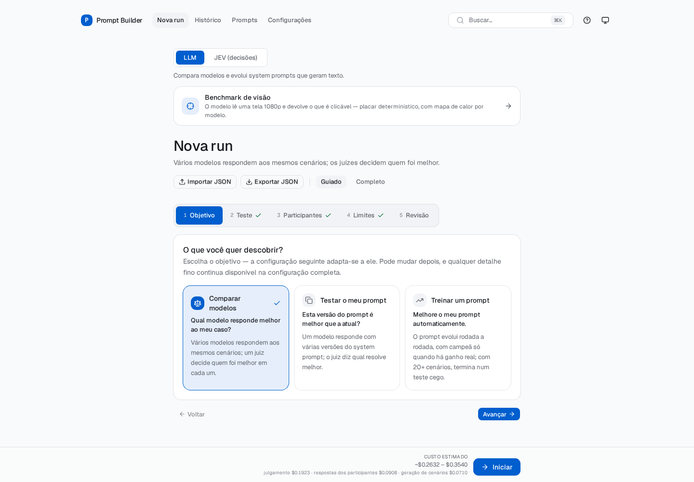
01-nova-run-card.png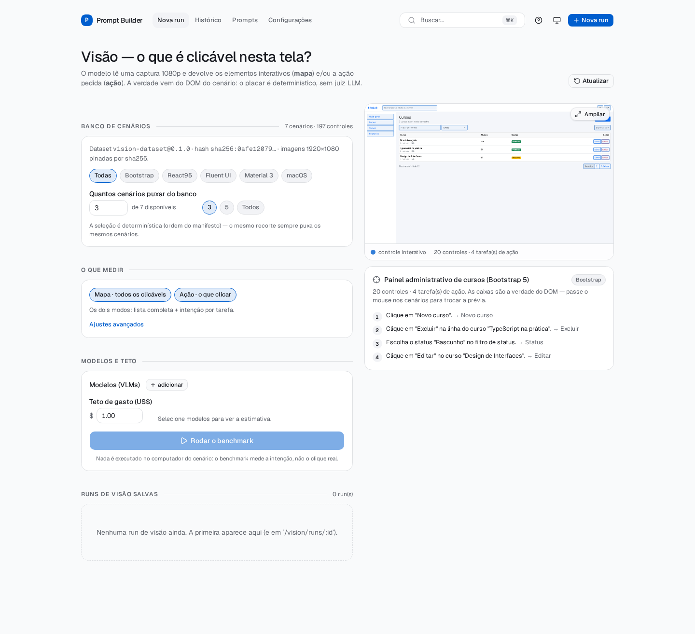
02-setup.png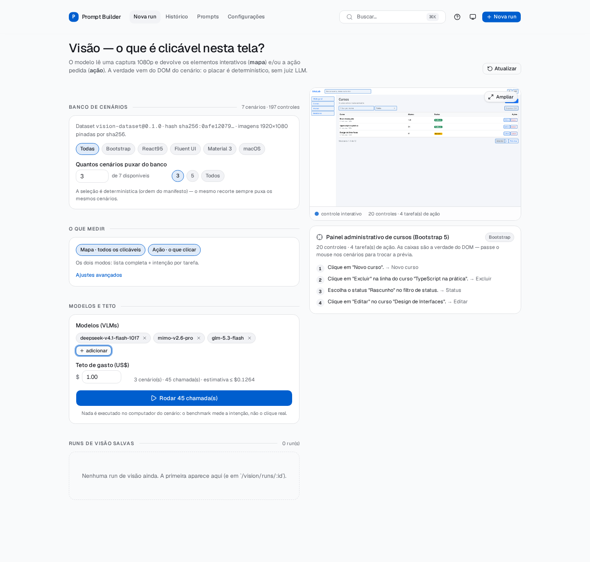
03-setup-modelos.png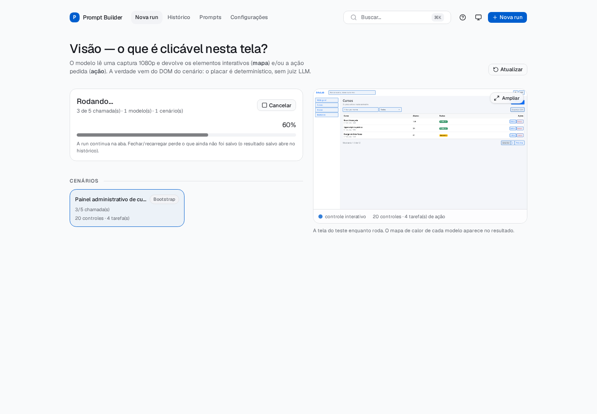
04-rodando.png
05-resultado-topo.png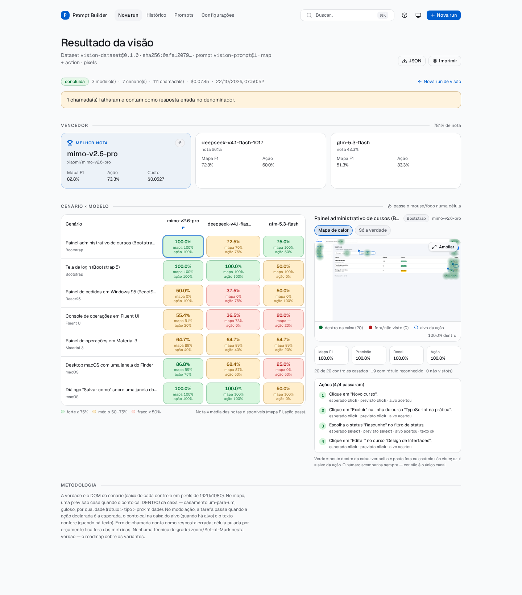
06-heatmap-xiaomi-mimo-v2-6-pro.png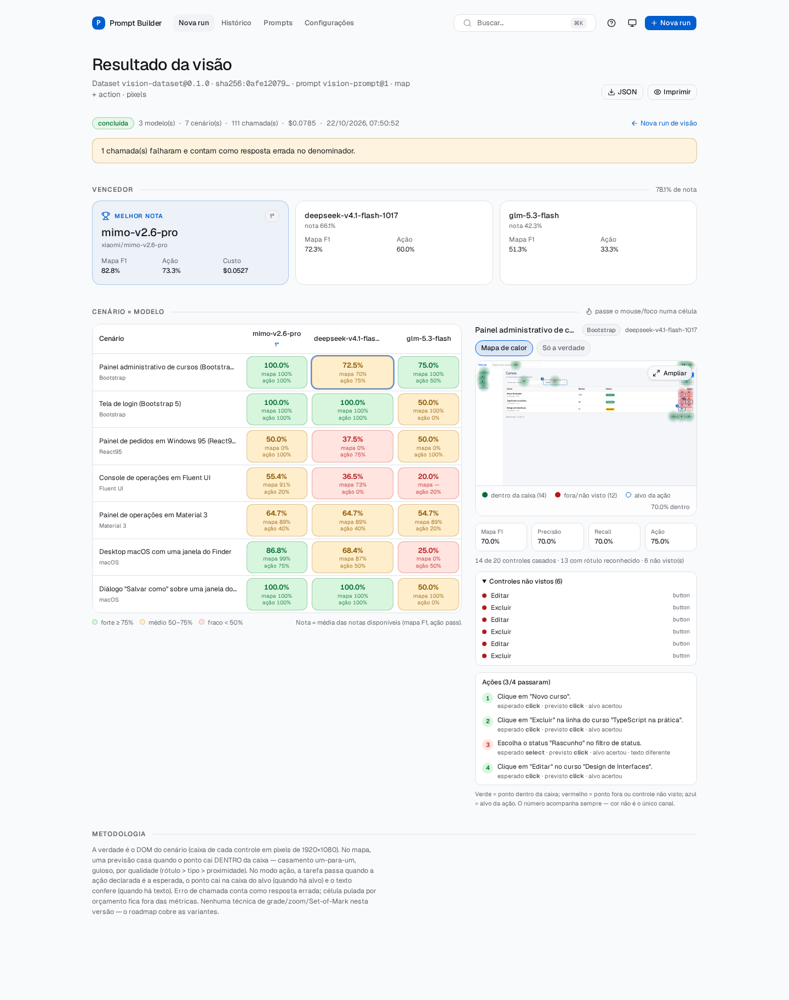
07-heatmap-deepseek-deepseek-v4-1-flash-1017.png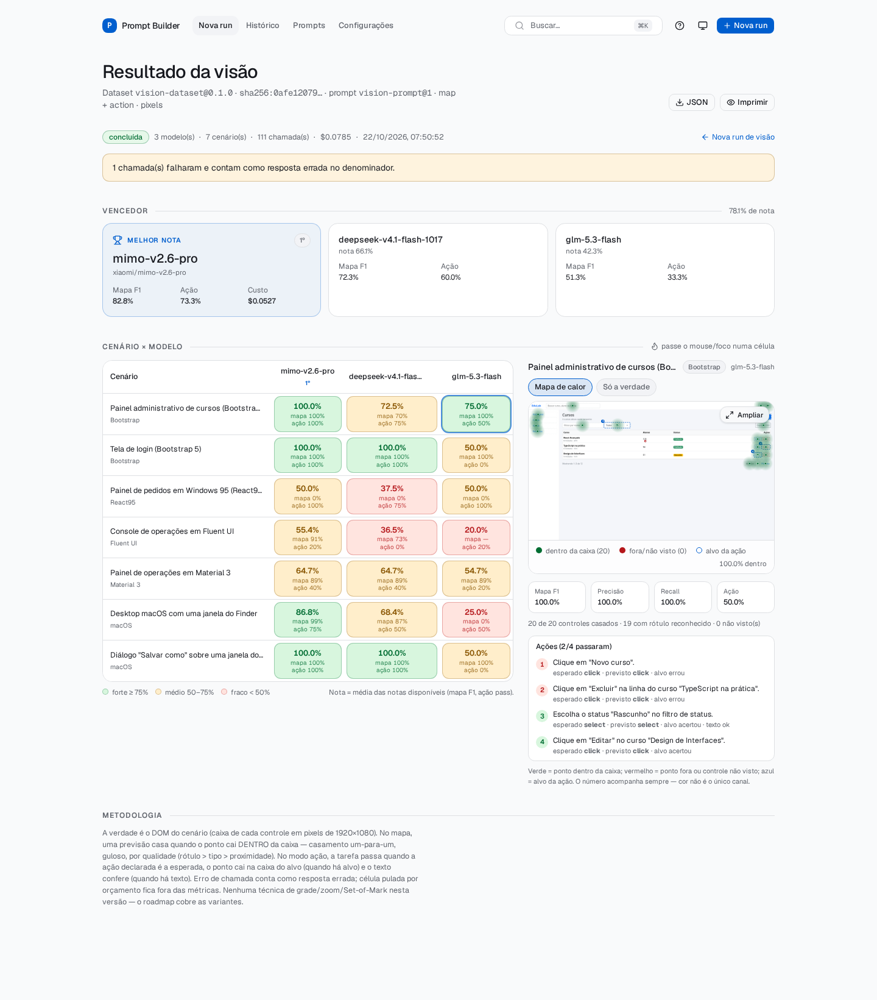
08-heatmap-z-ai-glm-5-3-flash.png09-verdade.png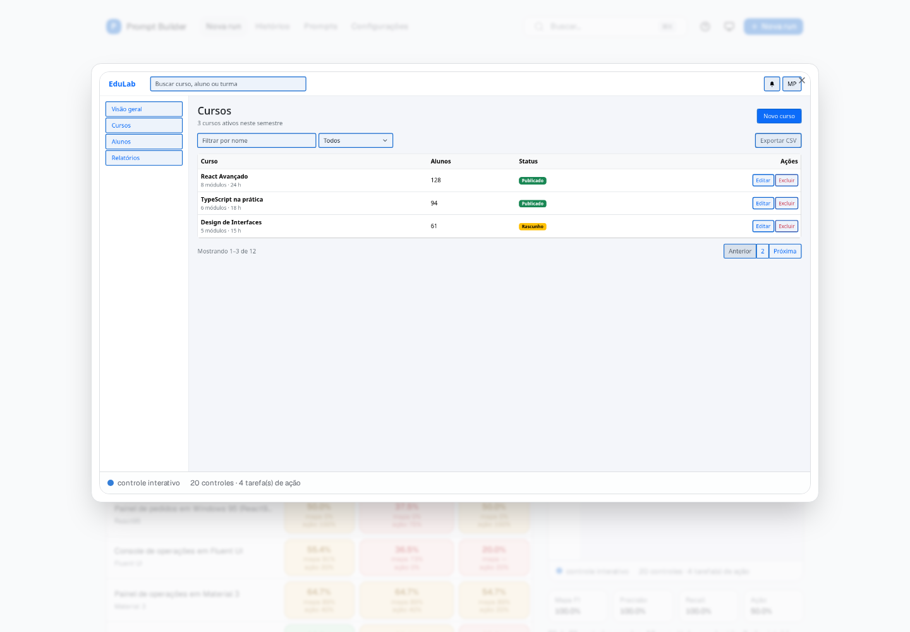
10-lightbox.png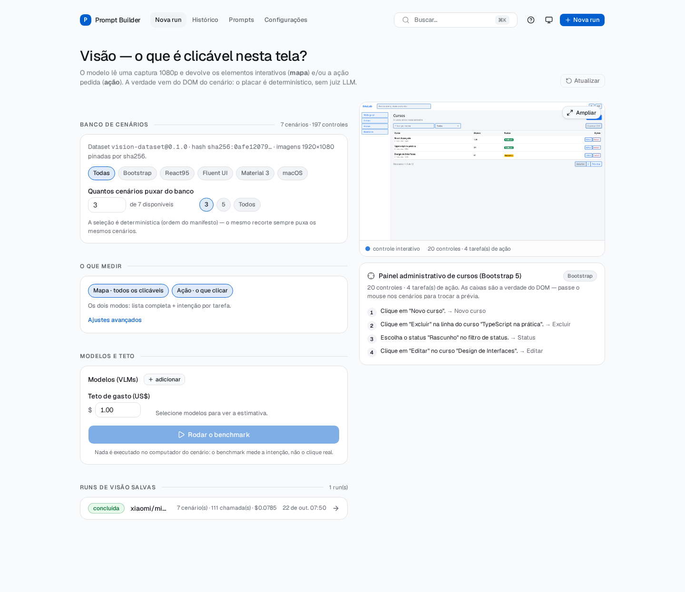
11-historico.png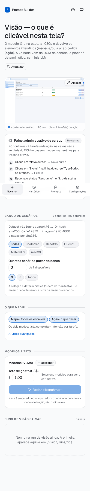
12-mobile-setup.png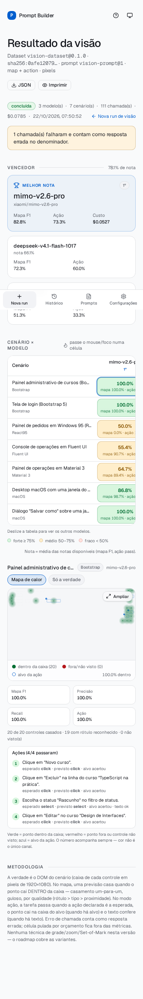
13-mobile-resultado.png